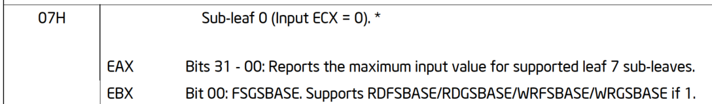

This is a ring 3 privillege level instruction.
The condition for a processor to be able to use these instructions are:
if CPUID.07H.0H:EBX.FSGSBASE[bit0] = 1 && CR4.FSGSBASE = 1
explaining this:
if CPUID with input of 0x7 in eax and 0x0 in ecx sub-leaf retruns -> bit[0] of ebx = 1
and CR4 bit[16]
cpuid:
